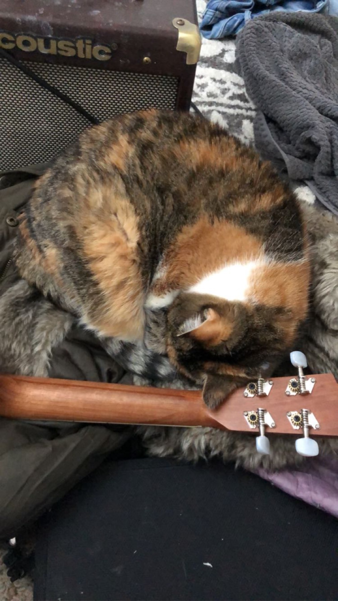
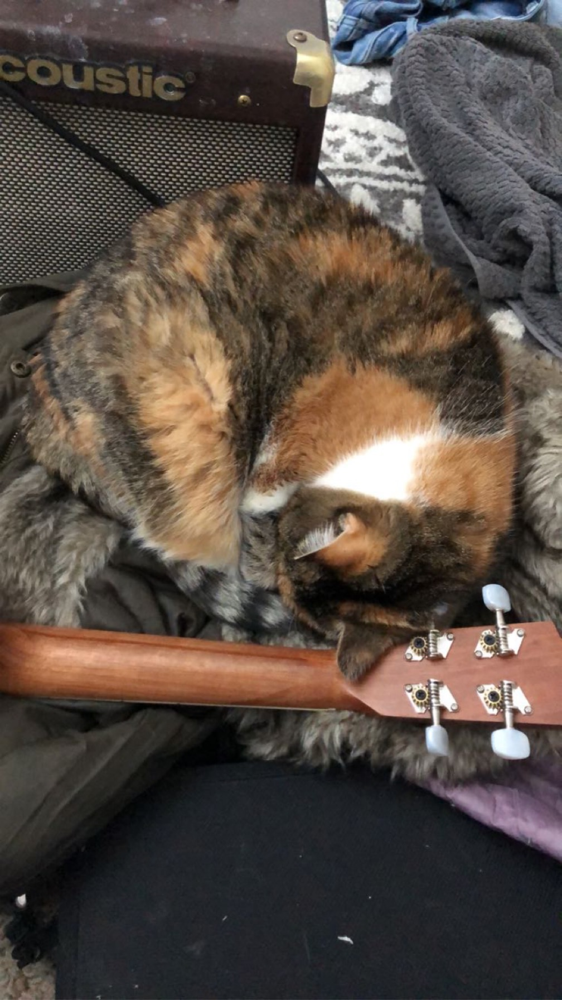

Lucy

Lucy is a 17-year-old calico that I’ve had since I was 5, she has pretty much grown up with me my whole life. Even though she’s old she’s still kickin’ it and enjoys running around the house at 4am.
Her favorite foods include anything but her kibble. She enjoys sunbathing and long naps, along with lots of petting. However, she hates getting her stomach rubbed.
Photo Gallery
 

{kind=link}


Likes
- Food
- Head Rubs
- Sleeping in the sun
Finn

Finn is a 7 year old grey cat. I feel like no one really knows cat breeds so I’m just gonna go with grey. He loves doing tricks for treats and his favorite is giving high fives to people. He might as well be a dog as he loves the outdoors and meeting new people. I can only describe him as goofy and chaotic.
Finn’s biggest enemy is his vet. I don't know whether or not it’s because his vet is an MSU alum, but he doesn’t like him. He actually has to be prescribed a sedative before he goes to the vet office because he’ll suddenly act like he was never a house cat for 7 years.
Photo Gallery


Likes
- Belly rubs
- Head Rubs
- Sleeping in cardboard boxes
Cheeto (Chicken)

Cheeto is a cat who likes to eat a lot and play a lot. He has an obsession with his grandpa (human) and tries to get outside every single day. If he isn’t causing problems, he is usually hiding in a seven foot tall cat tree and sleeping.
Another name for Cheeto is Chicken, because sometimes he sits very scrunched up and ends up looking like a rotisserie chicken. He was nicknamed this by one of his friends, and now he understands it as his own name. He is about six years old and still acts like a younger cat, despite being middle-aged.
Photo Gallery


Likes
- Treats
- Exploring
- My Dad
Milktea

Milktea is a Scottish fold with a personality of a princess. She loves her veggies and refuses to eat anything dropped on the ground. She makes it clear when she has a demand of any sort by complaining in a loud, distinguished manner. If what she says could be translated, it probably would be, “This is atrocious, the water container has been empty for the 3rd time this week. I want to see the manager.”
Despite her cuteness and royalty, she actually suffers from a genetic disorder intentionally brought upon by humans. I highly advise against keeping a Scottish fold because they are in constant pain when they reach around 2 years old. Cartilage accumulates around her paw joints and tail joints and it becomes painful for them to even walk. She is living evidence of human’s cruelty of breeding animals to look pretty while sacrificing the animals’ health.
Photo Gallery


Likes
- She loves individual corn kernels served on human hands
- She enjoys sitting royally on suitcases to claim ownership of her humans
- She prefers to be alone and sit on soft surfaces in her free time
Cooper

Cooper is an 8yr old border collie and lab mix. We rescued him from the Humane Society as a puppy! He loves going on long walks/runs, but he stops to sniff something every few steps. He’s pretty friendly, but he loves to loudly bark at delivery people who ring the doorbell.
Whenever it’s movie night, Cooper has to join on the couch/bed or he feels left out. He loves to cuddle and pats on his tummy. Cooper will play fetch for about 2 or 3 rounds, but he quickly gets bored. He leaves his toys all around the house for the rest of the family to find.
Photo Gallery


Likes
- Peanut butter
- Going on long walks
- Sleeping
Bacon Q Dog

Bacon Q. Dog is a 9yr old labradoodle. He prefers to spend his days lounging among the three different beds/couches that his family has gifted him. He enjoys a walk or two around the neighborhood, as long as he can pretend that he doesn't see any of the other animals to avoid the embarrassment of not wanting to admit he has no wolf-like skills in chasing them.
At night just as the rest of the family is ready to relax, Bacon suddenly wants to release all of his energy. He will place his toys on a mini couch and frantically drag the couch around, giving his toys "a ride." There is also a lot of rolling. Lots and lots of rolling.
Photo Gallery


Likes
- Belly rubs
- Playing tug-of-war
- Sneaking onto the couch